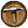
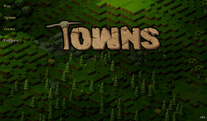
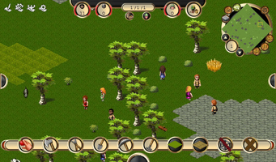
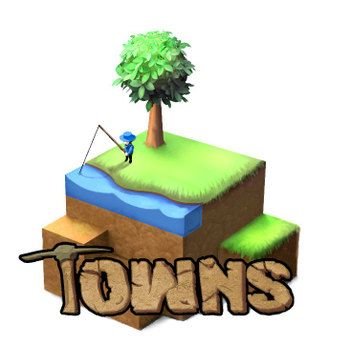

Towns
Dieser Artikel wurde für die folgenden Ubuntu-Versionen getestet:
Dieser Artikel ist mit keiner aktuell unterstützten Ubuntu-Version getestet! Bitte diesen Artikel testen und das getestet-Tag entsprechend anpassen.
Zum Verständnis dieses Artikels sind folgende Seiten hilfreich:

Towns  ist eine Städtebausimulation, welche an Dwarf Fortress anlehnt. An der Entwicklung des Spiels wird kontinuierlich gearbeitet und es kommen immer wieder Neuerungen hinzu.
ist eine Städtebausimulation, welche an Dwarf Fortress anlehnt. An der Entwicklung des Spiels wird kontinuierlich gearbeitet und es kommen immer wieder Neuerungen hinzu.
|  |  |
| Hauptmenü | Tutorial |
Installation¶
Indie Royale - Alpha Collection #1¶
Das Archiv Towns_VERSION_Linux.tar.gz von der persönlichen Seite herunterladen und entpacken [1]. Den Ordner Towns an die gewünschte Stelle im Homeverzeichnis verschieben (z.B. ~/Spiele) und das Startskript towns.sh ausführen [2]. Auf Wunsch einen Menü-Eintrag [3] vornehmen.
Hinweis:
Ein Schlüssel für Desura steht zur Verfügung.
Desura¶
Nachdem man das Spiel über die Internetseite oder den Client erworben hat, kann das Spiel installiert [4] und über diesen gestartet werden. Updates erfolgen über den Client.
Hinweis:
Bedingung für das Spielen von Towns ist eine bereits installierte Java Laufzeitumgebung (JRE).
Modifikationen¶
Eine Liste nützlicher Modifikationen:
| Modifikationen | ||
| Link | Beschreibung | Verwendung |
| names.xml | Namen auf Deutsch | Die Datei öffnen und die benötigten Daten in die names.xml im Unterordner data übertragen [5]. |
Towns Deutsch Data.zip  v8a, ältere Versionen v8a, ältere Versionen | Deutsches Sprachpaket | Für die verwendete Version das entsprechende Paket herunterladen und im Installationsverzeichnis entpacken [1]. |
Handbuch¶
Im Internet sind eine Reihe von Handbüchern rund in das Spielgeschehen zu finden.
Demo¶
Die Demoversion läuft 20 Tage und kann von townsgame.com oder moddb.com bezogen werden. Bei der Verwendung von Desura kann es über Towns verwendet werden.

Infobox¶
| Towns | |
| Originaltitel: | Towns |
| Genre: | RPG |
| Sprache: |  |
| Veröffentlichung: | 2011 |
| Entwickler: | Xavi Canal und, Ben Palgi |
| minimale Systemvoraussetzungen: | |
| Medien: | Download |
| Strichcode / EAN / GTIN: | - |
| Läuft mit: | nativ |



- Erstellt mit Inyoka
-
 2004 – 2017 ubuntuusers.de • Einige Rechte vorbehalten
2004 – 2017 ubuntuusers.de • Einige Rechte vorbehalten
Lizenz • Kontakt • Datenschutz • Impressum • Serverstatus -
Serverhousing gespendet von